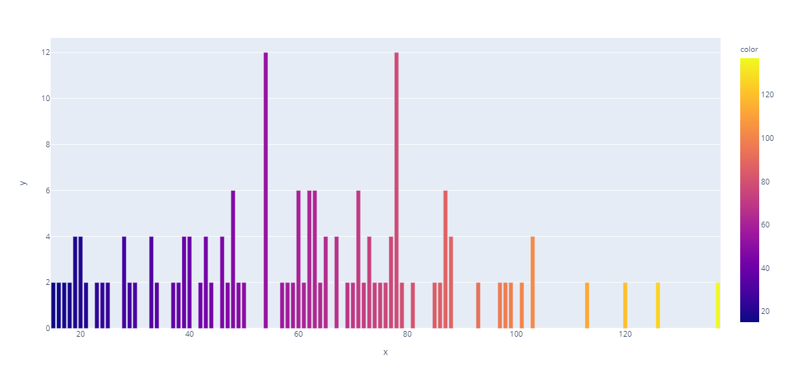

Dataset used for Analysis - dataset.csv
Model Code in Google Colab
Language: Python
Data Visualization
Graph with Age at x-axis
Graph with Gender at x-axis
Graph with Income (x $1000)at x-axis
Accuracy Scores
| S.No. | Algorithm | Accuracy |
|---|---|---|
| 1 | Linear Regression | 97.5 |
| 2 | Logistic Regression | 97.33334 |
| 3 | Random Forest Classification | 97.5 |
| 4 | Decision Tree | 95 |
| 5 | Support Vector Machine | 90 |
Conclusion
The results of the accuracy-test have concluded that the accuracy is approximately 97% with slight variations based on the algorithm used.
The dataset provided above was used in these models, which has 200 records of customer data. This dataset was split into two datasets: one with 160 records for training and the other with 40 records for testing.